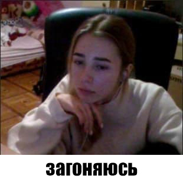
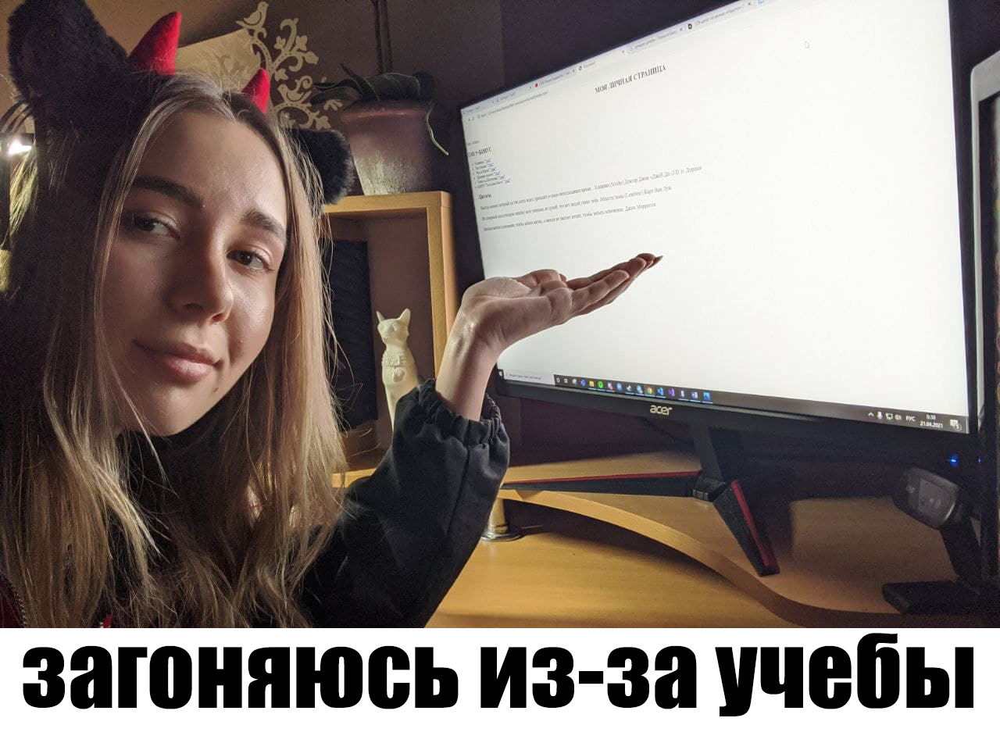

Опросив своих друзей можно сделать выводы, что я:

АЛИСА И ЕЁ СОСТОЯНИЯ
 ЦИТАТЫ
Иногда момент, который ты так долго ждал, приходит в самое неподходящее время... Клиника (Scrubs) Доктор Джон «Джей Ди (J.D.)» Дориан
Не совершай классическую ошибку всех умников: не думай, что нет людей умнее тебя. Области тьмы (Limitless) Карл Ван Лун
Иногда хватает мгновения, чтобы забыть жизнь, а иногда не хватает жизни, чтобы забыть мгновение. Джим Моррисон
МОИ ЛЮБИМЫЕ АНИМЕ ТЯНОЧКИ
ГДЕ ЖЕ Я ОБИТАЮ?
Интересные факты:- точное время возникновения Алексеевки неизвестно (историки называют конец 17 или начало 18 века);
- Алексеевка изначально не имела к городу никакого отношения и была автономным селом, которое присоединили к Харькову в 1930 году;
- Алексеевка делится на Старую (левый берег реки Лопань, выше нынешнего лугопарка) и Новую (район от пр. Людвига Свободы в сторону Пятихаток);
- в феврале 1943 года на Алексеевке велись жесточайшие бои за освобождение города;
- одними из первых жителей Алексеевки были бывшие заключенные.